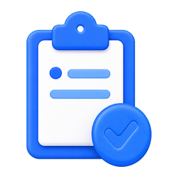

웹 개발 입문
선택됨HTML·CSS·JavaScript로 웹의 기초 다지기
관심 있는 학습 분야를 선택해 시작해보세요. 각 분야는 독립적으로 학습할 수 있어요.
HTML·CSS·JavaScript로 웹의 기초 다지기
React와 Next.js로 서비스 화면 만들기
서버에서 동작하는 웹 애플리케이션 만들기
SQL로 데이터를 저장하고 조회하기
가장 쉬운 언어로 프로그래밍 시작하기
배운 내용으로 나만의 웹 페이지 완성하기
선수 강의: JavaScript

웹 페이지의 기본 구조와 인터넷 동작 배우기
입문 · 레슨 28개
웹 페이지를 원하는 모습으로 꾸미기
입문 · 레슨 15개
웹 페이지에 동작과 상호작용 더하기
입문 · 레슨 38개
Java 문법과 객체지향 기초 다지기
입문 · 레슨 100개
폼 처리와 서버 측 웹 애플리케이션 흐름 익히기
입문 · 레슨 42개
관계형 데이터베이스와 SQL 기본 문법 익히기
입문 · 레슨 27개
테이블을 나누고 JOIN으로 연결하기
입문 · 레슨 8개
변수·조건문·반복문으로 프로그래밍 기초 익히기
입문 · 레슨 18개
컴포넌트로 화면을 나누고 CRUD 흐름 익히기
입문 · 레슨 10개
라우팅과 서버 렌더링으로 앱 완성하기
입문 · 레슨 18개
버전 관리로 코드를 안전하게 기록하기
입문 · 레슨 8개
0 학습 코스 0 도전할 퀴즈 0 함께하는 학습자